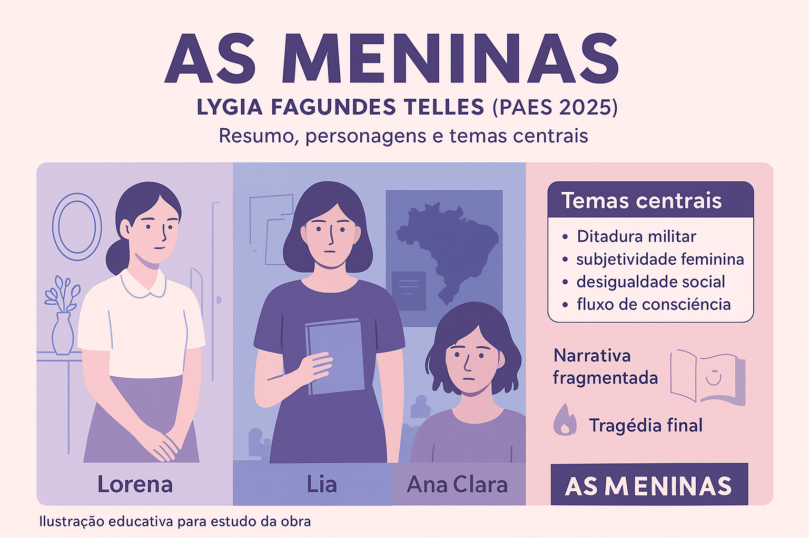

As Meninas — Resumo, Análise e Contexto da Obra de Lygia Fagundes Telles (Guia PAES 2026)
Por que estudar As Meninas para o PAES 2026
As Meninas, romance clássico de Lygia Fagundes Telles, é uma das obras mais ricas do pós-64 e, por isso, integra a lista obrigatória do PAES 2026. A narrativa reúne três vozes femininas complexas e complementares — Lorena, Lia e Ana Clara — e articula temas como repressão política, desigualdade social, subjetividade feminina e conflitos afetivos. Sua estrutura fragmentada e a profundidade psicológica das personagens fazem do livro uma leitura altamente interpretativa, frequentemente explorada em provas de vestibulares.
Neste guia completo, você encontra resumo, análise literária, contexto, personagens, temas centrais e um quiz com gabarito comentado — tudo organizado para reforçar a compreensão da obra de forma didática e estratégica.
Biografia de Lygia Fagundes Telles
Quem foi Lygia Fagundes Telles
Lygia Fagundes Telles (1923–2022) é considerada uma das maiores escritoras brasileiras do século XX e um dos principais nomes da ficção psicológica nacional. Autora de contos e romances consagrados, Lygia foi membro da Academia Brasileira de Letras e teve sua obra amplamente traduzida.
Sua escrita combina profundidade psicológica, lirismo, refinamento estético e forte atenção às tensões sociais e subjetivas. Entre seus temas recorrentes estão:
- a condição feminina;
- a memória e a identidade;
- os conflitos íntimos e familiares;
- a repressão política durante a ditadura militar.
Em As Meninas, Lygia aprofunda essas questões por meio de uma narrativa fragmentada que evidencia três modos de existir e resistir dentro de um Brasil autoritário.
Resumo de As Meninas
Visão geral (resumo adaptado do arquivo)
A história se passa na São Paulo da década de 1970, durante os anos finais da ditadura militar, e segue a vida de três jovens que dividem o pensionato Nossa Senhora de Fátima: Lorena, Lia e Ana Clara. Apesar de dividirem o mesmo espaço, cada uma vive conflitos internos e externos profundamente marcados por sua origem social, seu contexto familiar e suas escolhas afetivas e políticas.
A narrativa alterna as vozes das três protagonistas em um fluxo de consciência marcado por lembranças, expectativas, devaneios e tensões cotidianas. A composição fragmentada conduz a um desfecho trágico que altera radicalmente a vida de todas elas.
Resumo em partes
- Início: Apresentação do pensionato e das protagonistas, destacando suas vozes, conflitos íntimos e diferenças sociais.
- Desenvolvimento: As tensões políticas aumentam com a prisão de Miguel; Lorena vive dilemas amorosos com M.N.; Ana Clara luta contra a dependência química e vínculos destrutivos.
- Clímax e desfecho: A situação emocional de Ana Clara entra em colapso, culminando em sua morte; Lia segue para a clandestinidade; Lorena permanece transformada pela experiência da perda.
Análise literária de As Meninas
Estrutura, temas e recursos estilísticos
Estrutura narrativa: A obra apresenta estrutura fragmentada, alternando entre as três perspectivas narrativas. Lygia utiliza técnicas como fluxo de consciência, monólogo interior e sobreposição de tempos psicológicos, criando uma narrativa densa e multifacetada.
Temas centrais
- Ditadura militar, vigilância e repressão política; presença da militância na trajetória de Lia.
- Identidade feminina, subjetividade e resposta individual diante de pressões sociais.
- Desigualdade social, especialmente na relação entre Ana Clara, Lia e Lorena.
- Dependência emocional, traumas familiares, abandono e busca de pertencimento.
Motivos e símbolos recorrentes
A obra utiliza elementos simbólicos para reforçar a instabilidade emocional e a fluidez das identidades: água, espelhos, objetos delicados, luz e sombra, além de portas e corredores, que funcionam como metáfora das transições e da indefinição dos caminhos das personagens.
Personagens — perfis e funções
- Lia: militante política, racional, símbolo de resistência e coragem; enfrenta diretamente os riscos da repressão.
- Lorena: jovem da elite, sensível, romântica e idealizadora; vive conflitos afetivos e familiares.
- Ana Clara: marcada por pobreza, traumas e dependência química; representa a vulnerabilidade social e emocional, funcionando como eixo trágico da obra.
Estilo e impacto estético
A linguagem é ao mesmo tempo poética e precisa, com forte caráter psicológico. A fragmentação narrativa e a multiplicidade de vozes marcam um estilo pós-moderno que permite ao leitor construir sentidos a partir das lacunas, sobreposições e tensões entre as narradoras.
Relação com o PAES / Possíveis temas cobrados
A obra costuma ser explorada em questões que envolvem:
- análise de personagens e conflitos internos;
- contexto histórico da ditadura militar;
- estrutura fragmentada e técnicas narrativas;
- símbolos e motivos recorrentes;
- condição feminina e desigualdades sociais.
Por sua densidade literária e política, As Meninas é uma das obras mais relevantes da prova e deve ser estudada em profundidade.
Quiz — As Meninas (nível PAES / vestibulares)
Use o quiz para testar sua compreensão. Depois clique em Verificar Respostas para conferir o gabarito comentado.
Questão 1 — A alternância de narradoras em As Meninas tem, principalmente, a função de:
Apresentar diversas experiências femininas e a subjetividade fragmentada das personagens.
Questão 2 — Qual personagem simboliza a vulnerabilidade social e emocional, marcada por traumas e dependência?
Questão 3 — Em relação ao contexto histórico, qual personagem é a principal representação da militância e repressão política?
Questão 4 — Qual dos itens abaixo NÃO é um motivo simbólico recorrente na obra?
Questão 5 — A morte de Ana Clara na obra funciona, sobretudo, como:
Como usar este material para estudar
- Leia o resumo e depois faça a leitura focada nas passagens que exemplificam os motivos simbólicos (água, espelhos, etc.).
- Treine com o quiz e reescreva os comentários das respostas para fixar a argumentação.
- Compare a construção de As Meninas com outras leituras obrigatórias — relações entre estética e contexto histórico são alvo frequente de questões.
Explore Outros Conteúdos
Continue seus estudos acessando outras seções do site Mestre Kira: